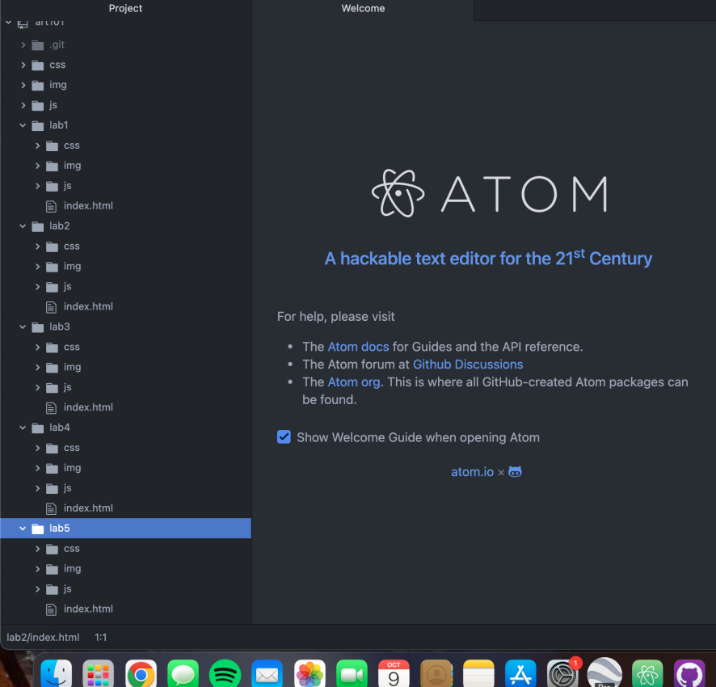
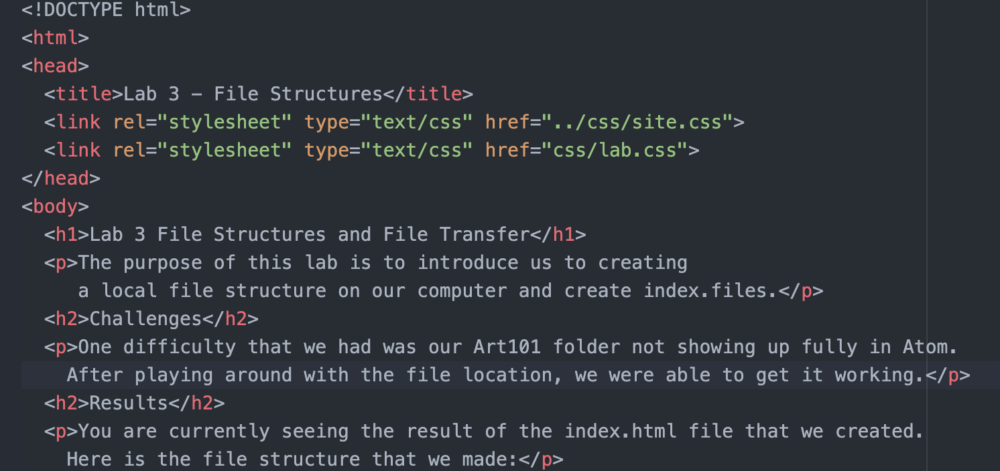
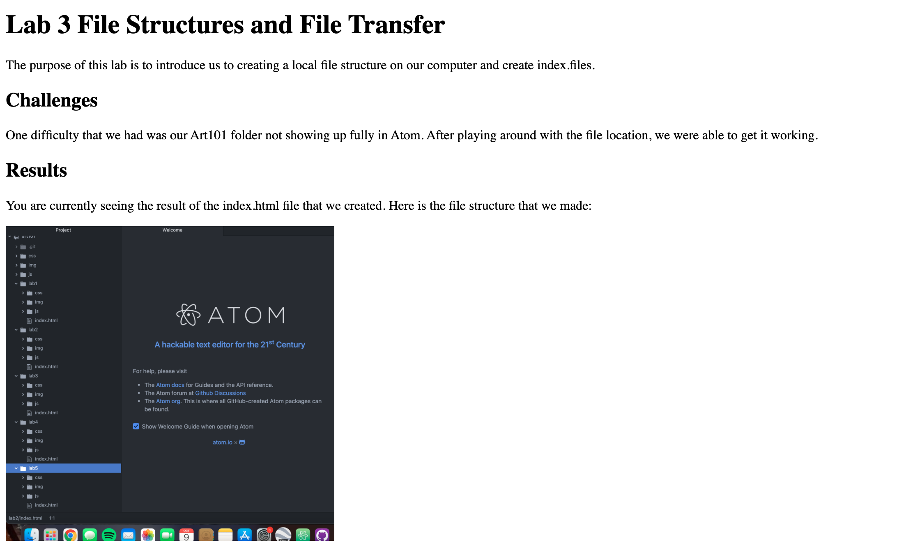

The purpose of this lab is to introduce us to creating a local file structure on our computer and create index.files.
One difficulty that we had was our Art101 folder not showing up fully in Atom. After playing around with the file location, we were able to get it working.
You are currently seeing the result of the index.html file that we created. Here is the file structure that we made:
Caption: art101/index.html as shown in browser
Caption: Index.html source code for art101/lab3
Caption: art101/Lab3/index.html as shown in browser